Lista de Exercícios
Peito

Como fazer:
- Deite-se em um banco plano, pés firmes no chão, coluna levemente arqueada e ombros apoiados.
- Segure a barra com pegada pronada (palmas para frente), um pouco mais larga que os ombros.
- Retire a barra do suporte, mantendo os braços estendidos acima do peito.
- Desça a barra lentamente até o peito, mantendo os cotovelos levemente afastados do tronco (cerca de 45°).
- Empurre a barra para cima, estendendo os braços sem travar os cotovelos completamente.

Como fazer:
- Deite-se em um banco inclinado (aproximadamente 30° a 45°).
- Pés firmes no chão, coluna levemente arqueada e ombros apoiados.
- Segure a barra com pegada pronada, um pouco mais larga que os ombros.
- Retire a barra do suporte, mantendo os braços estendidos acima do peito superior.
- Desça a barra lentamente em direção à parte superior do peito, mantendo os cotovelos afastados cerca de 45° do tronco.
- Empurre a barra para cima, estendendo os braços sem travar totalmente os cotovelos.

Como fazer:
- Deite no banco segurando dois halteres acima do peito.
- Cotovelos levemente flexionados.
- Desça os braços abrindo para os lados em arco, sem dobrar mais os cotovelos.
- Pare quando sentir alongar o peito, sem forçar o ombro.
- Suba trazendo os halteres de volta ao centro usando o peitoral, mantendo o arco.

Como fazer:
- Fique no meio da polia, um cabo em cada mão.
- Dê um passo à frente e incline levemente o tronco.
- Cotovelos semiflexionados.
- Puxe os cabos para frente e para baixo (ou para frente, dependendo da altura) cruzando levemente as mãos no final.
- Volte abrindo os braços em arco, sentindo o alongamento no peito.

Como fazer:
- Ajuste o banco para que as alças fiquem na altura do peito.
- Sente-se com as costas encostadas e pegue as alças com os cotovelos levemente flexionados.
- Feche os braços à frente do peito como um abraço, juntando as alças.
- Abra de volta controlando o movimento, sem deixar o ombro avançar.
Costas

Como fazer:
- Segure a barra com as mãos um pouco mais abertas que os ombros.
- Sente-se, trave as pernas e mantenha o peito aberto.
- Puxe a barra até a parte superior do peito, descendo os cotovelos.
- Suba controlando o movimento, sem deixar os ombros subirem.
- Evite balançar o tronco e não puxe atrás da nuca.

Como fazer:
- Sente-se com os pés apoiados e coluna reta, peito levemente aberto.
- Segure a barra ou triangulo com os braços estendidos, sem travar os cotovelos.
- Puxe trazendo o cabo para perto do abdômen, levando os cotovelos para trás.
- Evite balançar o tronco: o movimento vem das costas, não do corpo.
- Retorne devagar estendendo os braços, controlando sem deixar o peso puxar você.

Como fazer:
- Afaste os pés na largura dos ombros e incline o tronco para frente, mantendo a coluna reta.
- Segure a barra/halteres com os braços estendidos, sem travar os cotovelos.
- Puxe levando os cotovelos para trás, aproximando o peso do abdômen.
- Evite arredondar as costas e não levantar demais o tronco durante a puxada.
- Desça o peso controlando, mantendo sempre a postura firme.

Como fazer:
- Segure a barra com as mãos afastadas na largura dos ombros, pegada pronada (palmas para frente).
- Deixe o corpo pendurado com os braços estendidos e escápulas ativadas (ombros “para baixo”).
- Puxe elevando o corpo até o queixo ultrapassar a barra.
- Evite balançar ou usar impulso; o movimento deve vir das costas e braços.
- Desça devagar até a extensão completa dos braços, mantendo o controle.

Como fazer:
- Segure a barra da polia alta com as mãos um pouco mais abertas que os ombros.
- Sente-se mantendo o tronco reto e o peito aberto, travando bem as pernas no apoio.
- Inicie puxando os cotovelos para baixo e para trás, aproximando a barra do peito.
- Não deixe os ombros subirem ou o tronco balançar para gerar impulso.
- Retorne devagar, estendendo os braços com controle sem relaxar totalmente.
Quadríceps

Como fazer:
- Afaste os pés na largura dos ombros, pontas levemente viradas para fora.
- Mantenha o peito aberto, coluna reta e o core firme.
- Desça flexionando os quadris e joelhos, levando o bumbum para trás.
- Pare quando as coxas ficarem paralelas ao chão (ou o máximo que conseguir sem perder a forma).
- Suba empurrando o chão com os calcanhares, mantendo o tronco estável.

Como fazer:
- Sente-se com a lombar e o quadril totalmente apoiados no banco.
- Posicione os pés na plataforma na largura dos ombros, pontas levemente abertas.
- Destrave a máquina e desça controlando até os joelhos chegarem perto dos 90°.
- Empurre a plataforma estendendo as pernas sem travar os joelhos no topo.
- Mantenha o quadril colado no banco para não forçar a lombar.

Como fazer:
- Ajuste o encosto para que seus joelhos fiquem alinhados com o eixo da máquina.
- Apoie os pés no rolo inferior com as canelas formando um ângulo confortável.
- Estenda as pernas elevando o peso até quase travar os joelhos (sem travar completamente).
- Contraia o quadríceps no topo do movimento.
- Desça devagar, controlando até voltar à posição inicial.

Como fazer:
- Dê um passo à frente mantendo o tronco ereto e o core firme.
- Desça flexionando os dois joelhos até a perna de trás ficar quase encostando no chão.
- Mantenha o joelho da frente alinhado com o pé (sem ultrapassar muito a ponta).
- Empurre o chão com o calcanhar da perna da frente para subir.
- Na passada, avance alternando as pernas mantendo sempre o controle.
Posterior

Como fazer:
- Deite-se de barriga para baixo no aparelho, com as pernas estendidas e os rolos apoiados logo acima dos calcanhares.
- Segure nas alças do equipamento (ou nas laterais) para estabilizar o corpo.
- Inspire e flexione os joelhos, puxando os rolos em direção aos glúteos.
- Contraia bem a parte de trás das coxas no final do movimento.
- Expire e retorne devagar à posição inicial, estendendo as pernas sem deixar o peso cair.

Como fazer:
- Fique em pé com a barra/halteres nas mãos, pés na largura dos ombros.
- Mantenha a coluna reta e o peito aberto antes de iniciar o movimento.
- Desça empurrando o quadril para trás, mantendo os joelhos levemente flexionados.
- Leve o peso até sentir alongar a parte de trás das pernas, sem arredondar a lombar.
- Suba estendendo o quadril e contraindo glúteos, mantendo o controle.

Como fazer:
- Pés na largura dos ombros, barra perto das canelas, costas retas e peito aberto.
- Segure a barra com as mãos um pouco fora da largura dos ombros.
- Empurre o chão com os pés, mantendo a barra rente ao corpo.
- Estenda os joelhos e quadril juntos até ficar ereto.
- Leve o quadril para trás e, depois, dobre os joelhos até a barra tocar o chão.

Como fazer:
- Ajuste o banco para que o apoio fique logo abaixo do quadril, permitindo flexão do tronco.
- Cruze os braços no peito ou segure um peso junto ao corpo, mantendo a coluna neutra.
- Desça o tronco devagar, dobrando na cintura sem arredondar a lombar.
- Suba estendendo o tronco até alinhar com o resto do corpo (sem hiperextender).
- Contraia glúteos e lombar no topo, mantendo sempre o controle.
Panturrilha
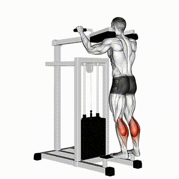
Como fazer:
- Fique em pé em uma plataforma ou degrau, com a parte da frente dos pés apoiada e os calcanhares livres no ar.
- Segure um halter ou barra sobre os ombros (ou use apenas o peso do corpo).
- Mantenha coluna reta, abdômen firme e joelhos levemente flexionados.
- Eleve os calcanhares, ficando na ponta dos pés, contraindo a panturrilha no topo.
- Desça lentamente, alongando o músculo até sentir um leve alongamento no tendão de Aquiles.

Como fazer:
- Fique em pé com as pernas afastadas na largura dos ombros.
- Use um step ou a borda de um degrau e use uma parede ou objeto para se apoiar e manter o equilíbrio.
- Mantenha a coluna reta e o abdômen contraído.
- Suba elevando os calcanhares o máximo que puder, usando a força das panturrilhas. Concentre a força na base do dedão, evitando jogar o peso para o dedo mindinho.
- Segure a contração no ponto mais alto por um instante (cerca de 2 segundos).
- Desça lentamente, baixando os calcanhares até ficarem abaixo do nível da plataforma ou degrau, sentindo o músculo alongar completamente.
- Repita o movimento de forma controlada, sem fazer movimentos rápidos ou "saltitantes".

Como fazer:
- Sente-se em um aparelho específico para panturrilha sentada ou em um banco, com halteres apoiados sobre os joelhos.
- Apoie a parte da frente dos pés em uma plataforma ou degrau, deixando os calcanhares livres.
- Mantenha coluna reta e abdômen firme.
- Eleve os calcanhares, ficando na ponta dos pés, contraindo a panturrilha no topo.
- Desça lentamente, alongando o músculo até sentir um leve alongamento no tendão de Aquiles.

Como fazer:
- Sente-se no aparelho leg press, pés apoiados na plataforma na largura dos ombros.
- Coloque a parte da frente dos pés na plataforma, deixando os calcanhares livres.
- Apoie as costas totalmente no encosto e mantenha o abdômen firme.
- Empurre a plataforma com a ponta dos pés, elevando os calcanhares e contraindo a panturrilha no topo.
- Desça lentamente, permitindo que o calcanhar fique abaixo da linha da plataforma para alongar bem a panturrilha.
Ombros

Como fazer:
- Sente-se em um banco com encosto ou fique em pé com os pés na largura dos ombros.
- Segure halteres ou barra na altura dos ombros, palmas voltadas para frente.
- Mantenha abdômen firme e coluna reta.
- Empurre o peso para cima até os braços ficarem estendidos acima da cabeça, sem travar totalmente os cotovelos.
- Desça lentamente até a altura dos ombros, controlando o movimento.

Como fazer:
- Fique em pé, pés na largura dos ombros, abdômen firme.
- Segure um halter em cada mão, braços ao lado do corpo, palmas voltadas para dentro.
- Mantenha cotovelos levemente flexionados e ombros relaxados.
- Eleve os braços lateralmente até a altura dos ombros, mantendo o cotovelo levemente dobrado.
- Desça lentamente os halteres de volta à posição inicial, controlando o movimento.

Como fazer:
- Fique em pé, pés na largura dos ombros, abdômen firme.
- Segure um halter em cada mão, braços estendidos à frente do corpo, palmas voltadas para baixo ou para dentro.
- Mantenha cotovelos levemente flexionados e ombros relaxados.
- Eleve os braços à frente, até que fiquem aproximadamente na altura dos ombros.
- Desça lentamente os halteres de volta à posição inicial, controlando o movimento.
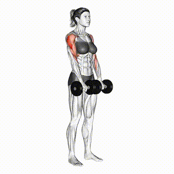
Como fazer:
- Fique em pé, pés na largura dos ombros, abdômen firme.
- Segure uma barra ou halteres com pegada pronada (palmas para baixo), mãos na largura dos ombros.
- Mantenha coluna reta, ombros relaxados e braços estendidos à frente do corpo.
- Puxe a barra ou halteres em direção ao peito, subindo cotovelos para cima e para fora, até que fiquem aproximadamente na altura dos ombros.
- Desça lentamente o peso de volta à posição inicial, controlando o movimento.
Tríceps
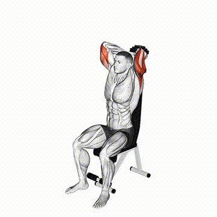
Como fazer:
- Fique em pé, sentado ou deitado (dependendo da variação).
- Segure o halter (com as duas mãos) ou a barra com os braços estendidos acima da cabeça (ou acima do peito, se estiver deitado).
- Mantenha o abdômen contraído e os cotovelos próximos da cabeça, sem abrir para os lados.
- Desça o peso lentamente, dobrando apenas os cotovelos, até sentir alongar o tríceps.
- Se estiver em pé ou sentado, o peso vai para trás da cabeça.
- Se estiver deitado, a barra vai em direção à testa.
- Suba o peso, estendendo os cotovelos até quase esticar completamente os braços.
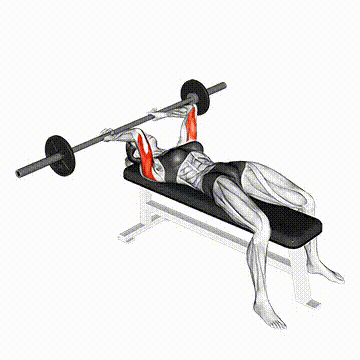
Como fazer:
- Deite-se em um banco reto, com os pés firmes no chão e o corpo estável.
- Segure uma barra reta, barra W ou dois halteres, com as palmas voltadas para frente (pegada supinada).
- Estenda os braços acima do peito, mantendo os cotovelos alinhados aos ombros e ligeiramente fechados (não abertos para os lados).
- Mantenha o abdômen firme e os ombros fixos contra o banco.
- Inspire e flexione lentamente os cotovelos, abaixando a barra (ou halteres) em direção à testa — o movimento ocorre somente nos cotovelos.
- Mantenha os cotovelos apontados para cima durante todo o movimento, sem deixá-los se abrir.
- Quando a barra (ou halteres) estiver próxima à testa, estenda novamente os cotovelos, elevando o peso até a posição inicial.
- Expire ao subir, contraindo bem o tríceps no topo.
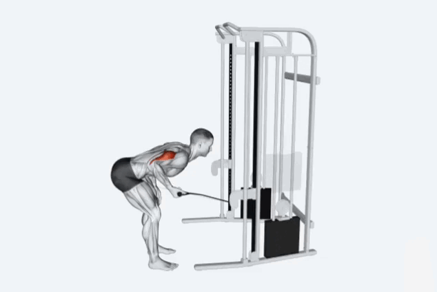
Como fazer:
- Fique em pé, levemente inclinado para frente, pés afastados na largura dos ombros.
- Segure a corda do pulley com as duas mãos ou apenas com uma mão (unilateral), palmas voltadas para dentro.
- Cotovelos próximos ao tronco, formando um ângulo de 90° com o braço.
- Abdômen firme e coluna reta.
- Estenda os cotovelos, empurrando a corda para trás, até os braços ficarem completamente estendidos.
- Separe levemente as pontas da corda no final do movimento para maior contração do tríceps.
- Volte lentamente à posição inicial, mantendo os cotovelos fixos.
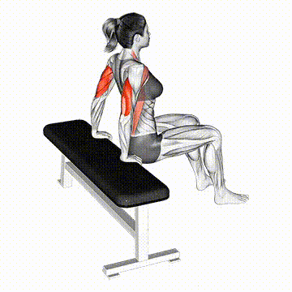
Como fazer:
- Sente-se na beira de um banco reto e apoie as mãos ao lado do quadril, com os dedos voltados para frente.
- Estenda as pernas à frente, mantendo os calcanhares apoiados no chão e o corpo levemente afastado do banco.
- Mantenha o tronco ereto, o olhar à frente e os cotovelos estendidos, sustentando o peso do corpo com os braços.
- (Versão avançada: Apoie os pés em outro banco à frente, deixando as pernas paralelas ao chão.)
- Inspire e flexione os cotovelos, abaixando lentamente o corpo em direção ao chão até formar um ângulo de 90° entre o braço e o antebraço.
- Mantenha os cotovelos apontados para trás, próximos ao corpo — não os abra para os lados.
- Quando atingir o ponto mais baixo, empurre o corpo para cima estendendo os cotovelos, até retornar à posição inicial.
- Expire ao subir, contraindo o tríceps no topo do movimento.
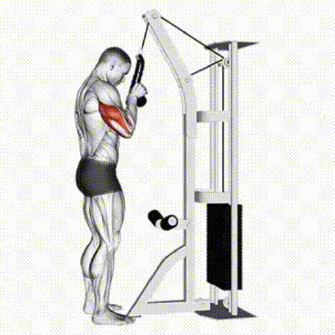
Como fazer:
- Fique em pé, de frente para a máquina de polia alta.
- Segure a corda ou a barra com as palmas voltadas para baixo (pegada pronada).
- Mantenha os cotovelos junto ao corpo, braços próximos do tronco e joelhos levemente flexionados.
- Deixe o corpo levemente inclinado para frente e abdômen contraído.
- Empurre a corda ou barra para baixo, estendendo completamente os cotovelos.
- Com a corda, afaste as pontas no final do movimento (abrindo para fora).
- Com a barra, mantenha o movimento reto até os braços ficarem estendidos.
- Volte lentamente, dobrando os cotovelos até a altura do abdômen ou peito.
Bíceps

Como fazer:
- Fique em pé, com os pés afastados na largura dos ombros.
- Segure a barra com as palmas voltadas para frente (pegada supinada), mãos na largura dos ombros.
- Mantenha os braços estendidos ao longo do corpo e os cotovelos próximos ao tronco.
- Deixe o abdômen contraído e as costas retas, sem arquear ou inclinar o corpo.
- Inspire e, de forma controlada, flexione os cotovelos, elevando a barra em direção aos ombros.
- Mantenha os cotovelos fixos, evitando movimentar os ombros ou usar impulso.
- Ao chegar no ponto mais alto, contraia bem os bíceps.
- Expire enquanto desce lentamente a barra até a posição inicial, controlando o movimento até quase estender totalmente os braços (sem travar os cotovelos).
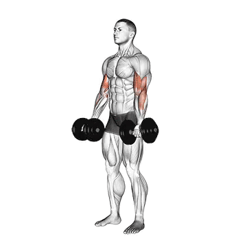
Como fazer:
- Fique em pé, com os pés afastados na largura dos ombros.
- Segure um halter em cada mão, com os braços estendidos ao longo do corpo e as palmas voltadas para frente.
- Mantenha os cotovelos próximos ao tronco, ombros relaxados e postura ereta (sem arquear as costas).
- Inspire e, de forma controlada, flexione simultaneamente os cotovelos, levantando os halteres em direção aos ombros.
- Concentre o esforço nos bíceps, evitando balançar o corpo ou usar impulso.
- Quando os halteres estiverem próximos aos ombros, faça uma breve contração dos bíceps.
- Expire enquanto desce lentamente os halteres à posição inicial, controlando o movimento até a extensão completa dos braços (sem travar os cotovelos).

Como fazer:
- Fique em pé, com os pés afastados na largura dos ombros.
- Segure um halter em cada mão, com as palmas voltadas para dentro (pegada neutra), braços estendidos ao longo do corpo.
- Mantenha o abdômen firme, as costas retas e os cotovelos próximos ao tronco.
- Inspire e, de forma controlada, flexione os cotovelos, elevando os halteres ao mesmo tempo em direção aos ombros — sem girar os punhos.
- Mantenha os cotovelos fixos e os ombros estáveis durante todo o movimento.
- No topo, contraia bem os bíceps e o braquiorradial (parte lateral do braço) por 1 segundo.
- Expire enquanto abaixa lentamente os halteres até a posição inicial, controlando o movimento até a extensão quase completa dos braços.
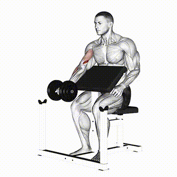
Como fazer:
- Sente-se na ponta de um banco com as pernas afastadas.
- Segure o halter com uma das mãos, deixando o braço estendido para baixo, entre as pernas.
- Apoie o cotovelo na parte interna da coxa (mesmo lado do braço que segura o halter).
- Mantenha as costas retas, o peito aberto e o abdômen firme.
- Flexione o cotovelo, levantando o halter em direção ao ombro, sem mover o tronco.
- Faça o movimento de forma controlada, contraindo bem o bíceps no topo.
- Desça o halter lentamente até quase estender completamente o braço, mantendo a tensão no músculo.

Como fazer:
- Fique em pé, com os pés afastados na largura dos ombros.
- Segure um halter em cada mão, com os braços estendidos ao longo do corpo e as palmas voltadas para dentro (pegada neutra).
- Mantenha o abdômen firme, o tronco ereto e os cotovelos próximos ao corpo.
- Inspire e flexione um dos cotovelos, elevando o halter em direção ao ombro.
- À medida que o halter sobe, gire o punho gradualmente para que, no topo do movimento, a palma da mão fique voltada para cima (supinada).
- Contraia o bíceps no ponto mais alto e segure por 1 segundo.
- Expire enquanto abaixa lentamente o halter até a posição inicial, retornando o punho à posição neutra.
- Repita o movimento com o outro braço, alternando os lados a cada repetição.
Antebraço

Como fazer:
- Sente-se em um banco, com os pés apoiados no chão e as pernas ligeiramente afastadas.
- Segure um halter em cada mão (ou uma barra leve), com as palmas voltadas para cima (pegada supinada).
- Apoie os antebraços sobre as coxas, deixando apenas os punhos para fora dos joelhos.
- Mantenha as mãos alinhadas com os antebraços e o tronco ereto.
- Inspire e abaixe lentamente os halteres, permitindo que os punhos se estendam para baixo (sem soltar o peso).
- Em seguida, flexione os punhos para cima, elevando o peso o máximo possível e contraindo os músculos do antebraço.
- Expire no final da subida e segure 1 segundo no topo da contração.
- Retorne lentamente à posição inicial, controlando a descida.

Como fazer:
- Sente-se em um banco com os antebraços apoiados nas coxas, palmas voltadas para cima.
- Segure a barra ou halteres com as mãos na largura dos ombros.
- Deixe os punhos um pouco à frente dos joelhos, para permitir o movimento de descida.
- Mantenha o tronco reto e o abdômen firme.
- Flexione os punhos, elevando a barra ou halteres o máximo que conseguir.
- Contraia os antebraços no topo do movimento.
- Desça lentamente o peso até sentir o alongamento na parte inferior do antebraço.
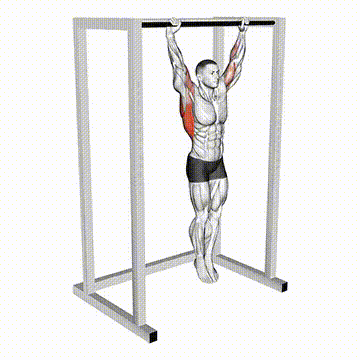
Como fazer:
- Segure uma barra fixa com as mãos um pouco mais afastadas que a largura dos ombros.
- Use pegada pronada (palmas voltadas para frente) ou supinada (palmas para você), conforme o objetivo.
- Fique pendurado, com os braços totalmente estendidos e os pés fora do chão.
- Ative o core (abdômen e glúteos levemente contraídos) e mantenha os ombros abaixados — evite deixar o corpo “solto demais”.
- Mantenha-se pendurado de forma estável, controlando o corpo.
- Respire normalmente e não balance.
- Segure o máximo de tempo que conseguir, mantendo boa postura.
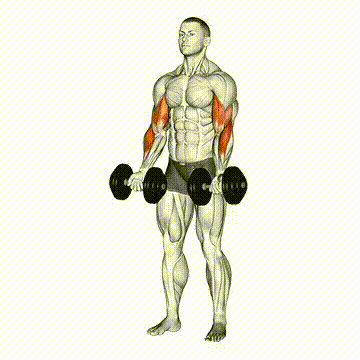
Como fazer:
- Fique em pé, com os pés na largura dos ombros e abdômen firme.
- Segure um halter em cada mão, palmas voltadas para frente (pegada supinada).
- Mantenha os cotovelos próximos ao tronco e braços estendidos ao lado do corpo.
- Flexione os cotovelos, levantando os halteres em direção aos ombros (como uma rosca direta).
- No topo do movimento, gire os punhos para que as palmas fiquem voltadas para baixo (pegada pronada).
- Desça os halteres lentamente com essa pegada pronada até a posição inicial.